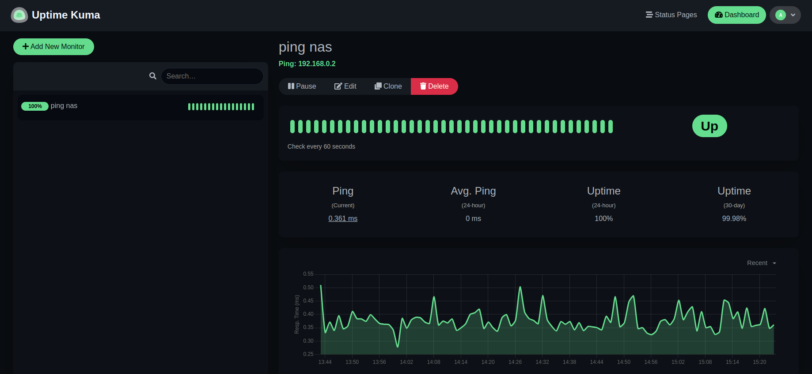

PI4 Stories¶
Raspberry Pi 4 cluster Series - Deploying uptime kuma with helm¶
Download the GitHub sources of Uptime Kuma¶
We forked the original GitHub Sources of https://github.com/k3rnelpan1c-dev/uptime-kuma-helm to make our adjustments [1].
If you wonder what you can do with Uptime Kuma, then the best description found is "Uptime Kuma is an easy-to-use self-hosted monitoring tool." - a simple example is to watch a NAS system with a simple ping:

Build the Uptime Kuma for ARM64 architecture¶
We have set-up GitHub Actions to build a container image for Uptime Kuma for x86 based images.
However, as we want to have an image for ARM64 we need to build it ourselves. We made a script build.sh to build the ARM64 based image:
REL=${1:-v1.0}
cat ~/.ghcr-token | docker login ghcr.io -u gdha --password-stdin
echo "Building pi4-uptime-kuma:$REL"
docker build --tag ghcr.io/gdha/pi4-uptime-kuma:$REL .
docker tag ghcr.io/gdha/pi4-uptime-kuma:$REL ghcr.io/gdha/pi4-uptime-kuma:latest
echo "Pushing pi4-uptime-kuma:$REL to GitHub Docker Container registry"
docker push ghcr.io/gdha/pi4-uptime-kuma:$REL
You can find the latest v1.0.5 image for ARM64
Start the Uptime Kuma pod via helm¶
Well this will be the first introduction with Helm charts [2]. Helm is a package manager for Kubernetes [3] and we were interesting to have some more knowledge about it.
References¶
[1] https://github.com/gdha/pi4-uptime-kuma-helm/
[2] How to Create Helm Chart (Comprehensive Beginners Guide)